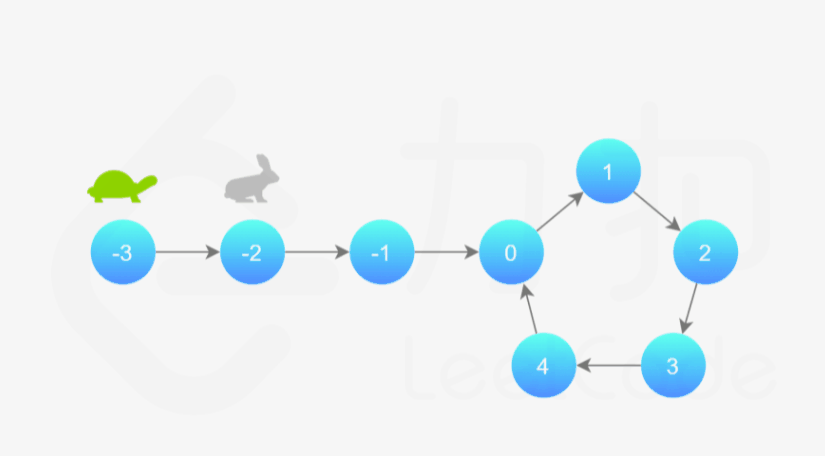
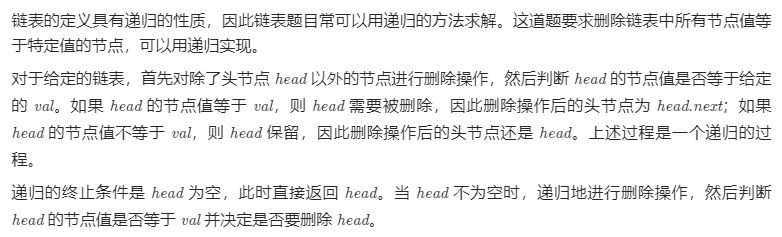
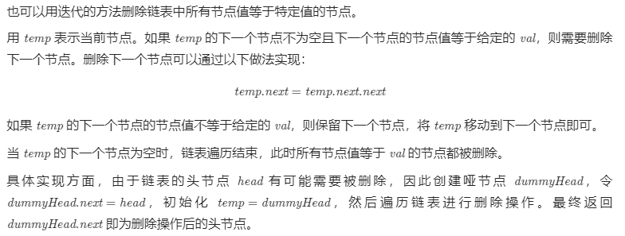

141. 环形链表
给定一个链表，判断链表中是否有环。
如果链表中有某个节点，可以通过连续跟踪 next 指针再次到达，则链表中存在环。 为了表示给定链表中的环，我们使用整数 pos 来表示链表尾连接到链表中的位置（索引从 0 开始）。 如果 pos 是 -1，则在该链表中没有环。注意：pos 不作为参数进行传递，仅仅是为了标识链表的实际情况。
如果链表中存在环，则返回 true 。 否则，返回 false 。
进阶：
你能用 O(1)（即，常量）内存解决此问题吗？
示例 1：

1 | 输入：head = [3,2,0,-4], pos = 1 |
示例 2：

1 | 输入：head = [1,2], pos = 0 |
示例 3：

1 | 输入：head = [1], pos = -1 |
1 | 提示： |
方法一：哈希表
思路及算法
最容易想到的方法是遍历所有节点，每次遍历到一个节点时，判断该节点此前是否被访问过。
具体地，我们可以使用哈希表来存储所有已经访问过的节点。每次我们到达一个节点，如果该节点已经存在于哈希表中，则说明该链表是环形链表，否则就将该节点加入哈希表中。重复这一过程，直到我们遍历完整个链表即可。
1 | public class Solution { |
复杂度分析
- 时间复杂度：
O(N)，其中N是链表中的节点数。最坏情况下我们需要遍历每个节点一次。 - 空间复杂度：
O(N)，其中N是链表中的节点数。主要为哈希表的开销，最坏情况下我们需要将每个节点插入到哈希表中一次。
方法二：快慢指针
思路及算法
本方法需要读者对「Floyd 判圈算法」（又称龟兔赛跑算法）有所了解。
我们可以根据上述思路来解决本题。具体地，我们定义两个指针，一快一满。慢指针每次只移动一步，而快指针每次移动两步。初始时，慢指针在位置 head，而快指针在位置 head.next。这样一来，如果在移动的过程中，快指针反过来追上慢指针，就说明该链表为环形链表。否则快指针将到达链表尾部，该链表不为环形链表。

细节
为什么我们要规定初始时慢指针在位置 head，快指针在位置 head.next，而不是两个指针都在位置 head（即与「乌龟」和「兔子」中的叙述相同）？
观察下面的代码，我们使用的是 while 循环，循环条件先于循环体。由于循环条件一定是判断快慢指针是否重合，如果我们将两个指针初始都置于 head，那么 while 循环就不会执行。因此，我们可以假想一个在 head 之前的虚拟节点，慢指针从虚拟节点移动一步到达 head，快指针从虚拟节点移动两步到达 head.next，这样我们就可以使用 while 循环了。
当然，我们也可以使用 do-while 循环。此时，我们就可以把快慢指针的初始值都置为 head。
1 | public class Solution { |
复杂度分析
时间复杂度：
O(N)，其中N是链表中的节点数。- 当链表中不存在环时，快指针将先于慢指针到达链表尾部，链表中每个节点至多被访问两次。
- 当链表中存在环时，每一轮移动后，快慢指针的距离将减小一。而初始距离为环的长度，因此至多移动
N轮。
空间复杂度：
O(1)。我们只使用了两个指针的额外空间。
21. 合并两个有序链表
203. 移除链表元素
给你一个链表的头节点 head 和一个整数 val ，请你删除链表中所有满足 Node.val == val 的节点，并返回 新的头节点 。
示例 1：

1 | 输入：head = [1,2,6,3,4,5,6], val = 6 |
提示：
- 列表中的节点数目在范围
[0, 104]内 1 <= Node.val <= 500 <= val <= 50
方法一：递归

1 | class Solution { |
复杂度分析
- 时间复杂度：
O(n)，其中n是链表的长度。递归过程中需要遍历链表一次。 - 空间复杂度：
O(n)，其中n是链表的长度。空间复杂度主要取决于递归调用栈，最多不会超过n层。
方法二：迭代

1 | class Solution { |
复杂度分析
- 时间复杂度：
O(n)，其中n是链表的长度。需要遍历链表一次。 - 空间复杂度：
O(1)。
206. 反转链表
83. 删除排序链表中的重复元素
存在一个按升序排列的链表，给你这个链表的头节点 head ，请你删除所有重复的元素，使每个元素 只出现一次 。
返回同样按升序排列的结果链表。
示例 1：

1 | 输入：head = [1,1,2] |
示例 2：

1 | 输入：head = [1,1,2,3,3] |
提示：
- 链表中节点数目在范围
[0, 300]内 -100 <= Node.val <= 100- 题目数据保证链表已经按升序排列
方法一：一次遍历
思路与算法
由于给定的链表是排好序的，因此重复的元素在链表中出现的位置是连续的，因此我们只需要对链表进行一次遍历，就可以删除重复的元素。
具体地，我们从指针 cur 指向链表的头节点，随后开始对链表进行遍历。如果当前 cur 与cur.next 对应的元素相同，那么我们就将cur.next 从链表中移除；否则说明链表中已经不存在其它与 cur 对应的元素相同的节点，因此可以将 cur 指向cur.next。
当遍历完整个链表之后，我们返回链表的头节点即可。
细节
当我们遍历到链表的最后一个节点时，cur.next 为空节点，如果不加以判断，访问cur.next 对应的元素会产生运行错误。因此我们只需要遍历到链表的最后一个节点，而不需要遍历完整个链表。
代码
注意下面 C++ 代码中并没有释放被删除的链表节点的空间。如果在面试中遇到本题，读者需要针对这一细节与面试官进行沟通。
1 | class Solution { |
复杂度分析
- 时间复杂度：
O(n)，其中n是链表的长度。 - 空间复杂度：
O(1)。

...
...
Copyright 2021 sunfy.top ALL Rights Reserved